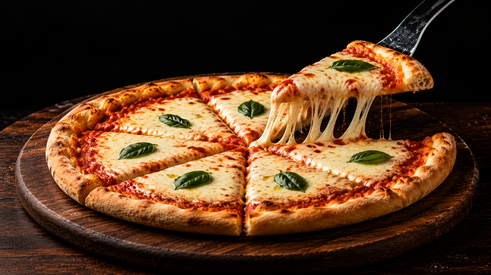

🍕 Margherita Pizza

Margherita Pizza is a classic Italian favorite topped with tomato sauce, mozzarella cheese, and fresh basil. With its crispy crust and simple ingredients, it proves that sometimes less is more.
🥣 Ingredients
- 1 pizza base
- 1/2 cup pizza sauce
- 1 cup mozzarella cheese
- Fresh basil leaves
- Salt
- 1 tbsp olive oil
- Black pepper
- Italian seasoning
- Chili flakes (optional)
📋 Recipe Information
⏱ Preparation time
|
🍽 Serves
|
⭐ Difficulty
|
25 mins |
2 people |
Easy |
👨🍳 Instructions
- Spread the pizza sauce evenly over the pizza base.
- Tear the fresh mozzarella into small pieces and spread it evenly over the sauce.
- Sprinkle salt, black pepper, Italian seasoning and drizzle with olive oil.
- Bake for 12 to 15 minutes until the crust is golden.
- Garnish with fresh basil leaves and serve hot.
💡 Tip
For the best flavor, add the fresh basil after baking to keep it vibrant and aromatic.
🍽 Best served with
- Garlic Bread 🥖
- Coca-Cola 🥤
- Fresh Salad 🥗
⬅ Back to Recipe Journal